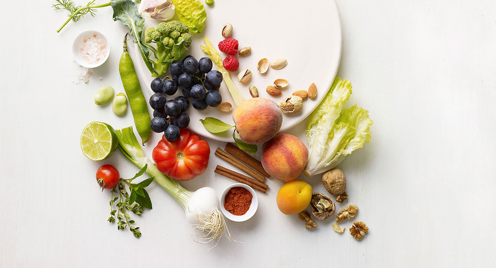

홈 >
브랜드 >
마켓오
마켓오

끼니를 챙겨먹기보단 때우기에도 벅찬 요즘,
‘하루를 버틸 든든하고 간편한 한끼를 만들자’ 라고
생각했습니다.
그래서 원물 그대로 담은 자연 한끼 ‘마켓오’가 탄생했습니다.
한끼를 한끼답게, 원물 그대로의 정직하고 건강한 맛을 내는
마켓오입니다.
원물 그대로 담은 자연 한끼
-
3 in 1
- 맛, 안전, 건강 세 가지를 하나로!
-
합성첨가물 0%! 그대로의 원료로 최소한의 공정을
통해 자연이 주는 좋은 맛 그대로를 살렸습니다.
-
NATURE
- 전용 목장에서 천연 발효
-
마켓오 전용 목장인 강원도 평창 청정지역에 위치한
유기낙농 인증목장 '마켓오팜’의 유기농 유제품에서
만든 천연발효종을 사용해 실온에서 자연발효합니다.
-
TRUST
- 농협에서 제공받는 국산 농산물
-
검은콩, 과일, 쌀, 단호박, 무화과 등 농협이 제공하는
국산 농산물을 가공해 신뢰와 믿음으로 만듭니다.